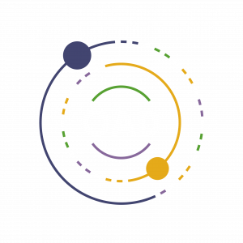
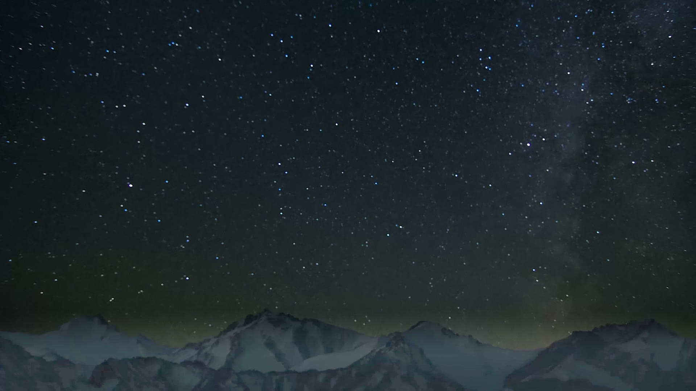

Skip to content
Part of the Office of Astronomy for Development
↗

Astrotourism
Resources
Which resource is right for you
The three resources
Practical guidelines
Online course
Community
Projects and impact
Impact
Interactive map
Project directory
Case studies
Theory of Change
Global Survey Report
Get funding
About
Part of the Office of Astronomy for Development
↗

{{hero.affiliation}}
{{hero.headlineWord}}
{{hero.headlineRest}}
{{hero.subheading}}